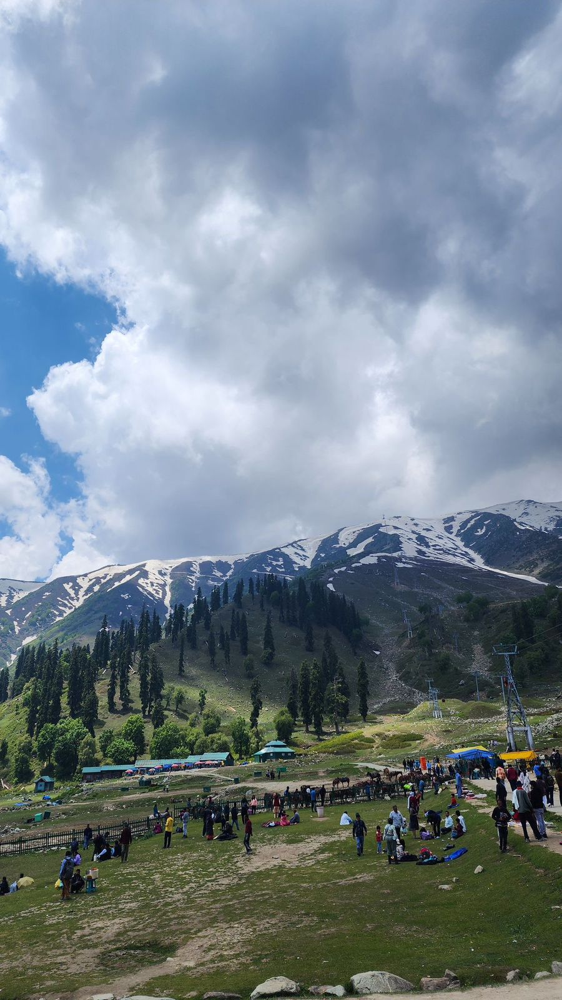

Shrinagar is a city in Jammu and Kashmir.It is the largest city and the summer capital of Kashmir.This place is known for its natural environment, various gardens,waterfronts and houseboats.It is also known for traditional handicrafts like the Kashmiri Shawl,wood carving,carpet weaving and jewel making as well as for dried fruits.
In Shrinagar, the summers are long,warm and clear and the winters are short,very cold,the temperature typically varies.The besttimes of the year to visit shrinagar for warm-weather activities are from mid May to late July and from early August to early October.
